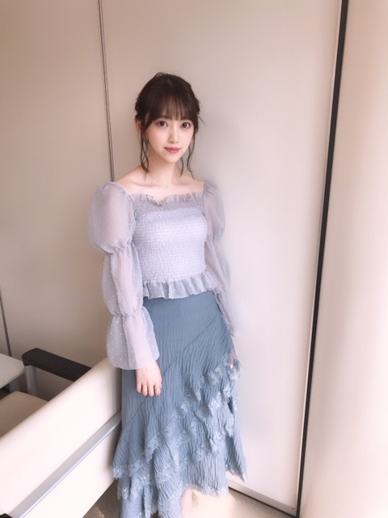

2019/0629Sat短いブログです
今日は19:00〜
99人の壁に出させていただきます！
皆さんの奮闘を見守りながら、まったり話しています。
この日の衣装は私が一番好きな色
くすみブルー尽くしでした！



わーい☺︎
見てください！
そして質問募集します✨
人は月日が経てば色々と変わるものなのでね。
なんでもどーぞです。
では
2019/06/29 17:06
コメント(932)
やる気がない時、どうやってやる気に切り替えますか？
映画を観る前に小説を読んで行くのはどう思いますか？
ファンの女の子目線で聴きたい質問です
寝る前のルーティンはなんですか？
寝る前のルーティンはなんですか？
質問です！
ホットギミックでは3人の男性への初恋に揺れていましたが、その3人が乃木坂メンバーならどの3人を指名しますか？？
ホットギミックでは3人の男性への初恋に揺れていましたが、その3人が乃木坂メンバーならどの3人を指名しますか？？
映画やドラマなどで共演したい役者さんって居ますか？？
今年の夏に達成したい目標はありますか？
テレビに出るお仕事は楽しい出すか？
うつ病と診断され仕事をする事も出かけたり人混みに行く事もできなくなってしまいました。
何度も消えてしまいたいと毎日の様に自分の存在を否定してしまいます。
正直、毎日が地獄の様です。
まだ酷くなる前に一度だけ堀ちゃんに会いに全国握手会に行きました。
「好きです」の一言しか言えなかったけど、自分が思っているよりも華奢で透明感も凄くて顔も小さかったのを覚えています。
全然、質問になってませんね。
また、いつか会いに行けたらなと思ってます。
何度も消えてしまいたいと毎日の様に自分の存在を否定してしまいます。
正直、毎日が地獄の様です。
まだ酷くなる前に一度だけ堀ちゃんに会いに全国握手会に行きました。
「好きです」の一言しか言えなかったけど、自分が思っているよりも華奢で透明感も凄くて顔も小さかったのを覚えています。
全然、質問になってませんね。
また、いつか会いに行けたらなと思ってます。
食べたことないけど食べてみたいものありますか？
質問です。
僕は薬学部に通う大学生なのですが、最近どうしてもやる気が出ません。
みおちゃんは、どうしてもやる気が出ない時や、だるい時など、どう対処していますか？
みおちゃんの意見をお聞かせください。
僕は薬学部に通う大学生なのですが、最近どうしてもやる気が出ません。
みおちゃんは、どうしてもやる気が出ない時や、だるい時など、どう対処していますか？
みおちゃんの意見をお聞かせください。
おすすめの夏ファッションを教えて！
ブログ更新ありがとうございます！
いつも応援してます！
握手会で話すときは、敬語かタメ語のどちらがいいですか？
いつも応援してます！
握手会で話すときは、敬語かタメ語のどちらがいいですか？
未央奈ちゃん！99人の壁見ましたよ！
好きな男性の仕草はなんですか？
好きな男性の仕草はなんですか？
最近いっぱいテレビで未央奈ちゃんが観ることが出来て嬉しいです！
頑張ってる姿を観ると自分も頑張ろうと思えます！
質問させていただきます！
夏が近づいていますが、この夏に挑戦してみたい事とかありますか？？
頑張ってる姿を観ると自分も頑張ろうと思えます！
質問させていただきます！
夏が近づいていますが、この夏に挑戦してみたい事とかありますか？？
ホットギミック見に行きました！
映画の世界観凄くてとても、面白かったです！
全ツ福岡行くので楽しみです！！
映画の世界観凄くてとても、面白かったです！
全ツ福岡行くので楽しみです！！
堀ちゃんが思う、絶対にショートが似合いそうなメンバーは誰ですか？
【質問】
どんな質問がいいですか？


どんな質問がいいですか？
ホットギミック男一人で見てきました！
初ちゃんを演じる上で1番意識したことはなんでふか？？？
好きやお！好きやお！好きやお！好きやお！好きやお！
大好きやお！！！大好きやお！！！
初ちゃんを演じる上で1番意識したことはなんでふか？？？
好きやお！好きやお！好きやお！好きやお！好きやお！
大好きやお！！！大好きやお！！！
未央奈ブログ更新ありがとう〜
朝からにじいろジーンと99人の壁お疲れ様〜
もうすぐツアーだね
リハーサルとか大丈夫ですか？笑笑
無理しないでね〜
質問です
未央奈流の恋愛とは？なんですか？
Byユーキー
朝からにじいろジーンと99人の壁お疲れ様〜
もうすぐツアーだね
リハーサルとか大丈夫ですか？笑笑
無理しないでね〜
質問です
未央奈流の恋愛とは？なんですか？
Byユーキー
質問です。
未央奈さんの座右の銘はなんですか？
未央奈さんの座右の銘はなんですか？
今度家族で東京に旅行しに行くのですが、食べ物系のおススメのお店ありますか？あったら、メニューも詳しく知りたいです。
ブログ更新ありがとう
ほかの坂道グルーで仲が良い子いる？
名前とエピソード知りたいです。
ほかの坂道グルーで仲が良い子いる？
名前とエピソード知りたいです。
好きなお寿司のネタはなんですか？
薄い色の衣装でもはっきりと見えるくらいに美白だね！
唯一変わらないただ１つの堀未央奈
「え？私ですか？」
唯一変わらないただ１つの堀未央奈
「え？私ですか？」
未央奈ちゃん、こんばんは(^o^)/
ではさっそく質問です( ＾∀＾)
ジンクスって信じますか？
今はまってる物(事)は？
次にまた映画に出れるとしたらどんな役をやってみたい？
またね( ＾∀＾)
ではさっそく質問です( ＾∀＾)
ジンクスって信じますか？
今はまってる物(事)は？
次にまた映画に出れるとしたらどんな役をやってみたい？
またね( ＾∀＾)
未央奈～こんばんは！
ぽてとです！
ホットギミック、月曜日に観に行く予定！
めちゃめちゃ楽しみ！
★質問
「東京五輪で注目の競技は何？」
ぽてとです！
ホットギミック、月曜日に観に行く予定！
めちゃめちゃ楽しみ！
★質問
「東京五輪で注目の競技は何？」
何か趣味を見つけたいのですが、みおちゃんの最近ハマっていることやマイブームを教えてください。
握手したいんですけど、なんの話すればいいか分かりません泣
おすすめはなんですか？
おすすめはなんですか？
ブログ更新ありがとう〜
バイトあったので99人の壁は録画しました…
これから見ます
質問は
前髪の巻き方どうやってますか？
と
ナゴヤドーム遠征するので、
オススメのご飯教えて欲しいです


お願いします
バイトあったので99人の壁は録画しました…
これから見ます
質問は
前髪の巻き方どうやってますか？
と
ナゴヤドーム遠征するので、
オススメのご飯教えて欲しいです
お願いします
99人の壁観ました！堀さんが出演されるということで初めてこの番組を観たんですけど、おもしろかったです
くすみブルーの衣装、似合ってるなと思います個人的にも好きな色ですね
そして、せっかくなので質問したいんですけど、
毎日忙しいですか？オフの日はありますか？
…これでは質問というより心配ですね(笑)
他の質問を。
バイオハザードでいちばん強いキャラはどのキャラだと思いますか？
ウェスカーですかね？スーパータイラント？追跡者？
くすみブルーの衣装、似合ってるなと思います
そして、せっかくなので質問したいんですけど、
毎日忙しいですか？オフの日はありますか？
…これでは質問というより心配ですね(笑)
他の質問を。
バイオハザードでいちばん強いキャラはどのキャラだと思いますか？
ウェスカーですかね？スーパータイラント？追跡者？
おすすめのホラー映画ありますか？
まずは、かわいい！！
そして、質問なのですが
今この地方のこれ食べたい！みたいなのありますか？
そして、質問なのですが
今この地方のこれ食べたい！みたいなのありますか？
毎日のケアでどこを重点的にケアしていますか？
いきなりですが質問です。
男の香水は有り派？
好きな髪型は銀魂の沖田との事なのですが、
髪色はどうですか？
男の香水は有り派？
好きな髪型は銀魂の沖田との事なのですが、
髪色はどうですか？
みおなちゃん
初めてコメントするけど、いきなり質問してもいいのかな？
◎この夏挑戦したいファッションとか、今気になってるアイテムありますか？
初めてコメントするけど、いきなり質問してもいいのかな？
◎この夏挑戦したいファッションとか、今気になってるアイテムありますか？
未央奈ちゃん更新ありがとー！
本日もお綺麗でございます。
質問コーナーだ！やったー！
では早速、
「今年の夏、これだけは必ずしたいこと教えてください！」
楽しみだなー(^o^)
本日もお綺麗でございます。
質問コーナーだ！やったー！
では早速、
「今年の夏、これだけは必ずしたいこと教えてください！」
楽しみだなー(^o^)
しんどい時や悲しい時さみしい時にくじけそうになったら堀さんはどうやって努力を続けてこれましたか？
ブログありがとー
質問します！未央奈はパーカーが好きってずっと言ってたけど、夏はどんな服装が好きですかー？
教えてください！ ♂️
質問します！未央奈はパーカーが好きってずっと言ってたけど、夏はどんな服装が好きですかー？
教えてください！ ♂️
劇中で初がかぶってて、ブログの写真にも登場したかわいいピンクの帽子はどちらのですかー？？
質問です
行ってみたい海外の世界遺産はありますか？
行ってみたい海外の世界遺産はありますか？
勉強ってどうやったらがんばれる？
ブログ更新ありがとうございます！
昨日の99人の壁楽しく拝見させて頂きました〜。
未央奈さんに質問です！
大切にしている「座右の銘」はありますか？
良かったら教えてください！
昨日の99人の壁楽しく拝見させて頂きました〜。
未央奈さんに質問です！
大切にしている「座右の銘」はありますか？
良かったら教えてください！
どうしてそんなに演技うまい？ホットギミック感動した
好きなYouTuberは？
今日個握行きます！
誕生日に行けて嬉しいです！
誕生日に行けて嬉しいです！
みおなちゃんが今ハマってる食べ物はなんですか！？
おすすめのメイク道具とか服教えて欲しいです！！
お願いします！！
お願いします！！
好きなバンド、オススメの歌手はありますか？
ブログ更新ありがとう！
99人の壁リアルタイムで見れなかったんだけど、ばっちり録画してあるから時間ある時に見るね〜！
くすみブルーの衣装素敵☺︎
特にスカートのひらひら感が好き！❤︎
今後、舞台とかドラマとか映画で演じてみたい役はどんな役？
みおちゃんが可愛いと思う浴衣の色は？
行ってみたい国はどこ？
3つ質問したけど、1つでも答えてくれたら嬉しいな☺︎
99人の壁リアルタイムで見れなかったんだけど、ばっちり録画してあるから時間ある時に見るね〜！
くすみブルーの衣装素敵☺︎
特にスカートのひらひら感が好き！❤︎
今後、舞台とかドラマとか映画で演じてみたい役はどんな役？
みおちゃんが可愛いと思う浴衣の色は？
行ってみたい国はどこ？
3つ質問したけど、1つでも答えてくれたら嬉しいな☺︎


男性の服装はキレイめ、カジュアル、ストリート系だとどれが好き？